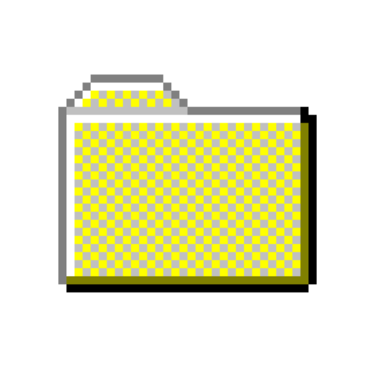

FutureJob™ v1.0 - Karrier Sors Előrejelző
×
Üdvözöljük!
Név:
Életkor:
Szak:
ELŐREJELZÉS INDÍTÁSA
Kész • 100% megbízható
Professor Roast 95 - Oktatói Megszégyenítő
×
Írd be a tárgy nevét vagy a tanár nevét:
ROASTOLJUK MEG! 🔥
Figyelem: nagyon durva lehet
AI Excuse Generator 1.0
×
Válaszd ki a szituációt:
Késés az óráról
Elfelejtettem a házi feladatot
Nem tudtam eljönni az órára
Csoportmunka nem készült el
GENERÁLJ EXCUSE-T
Kész

Homework.exe
Pong 1995 - Homework Breaker
×
Játékos: 0 AI: 0